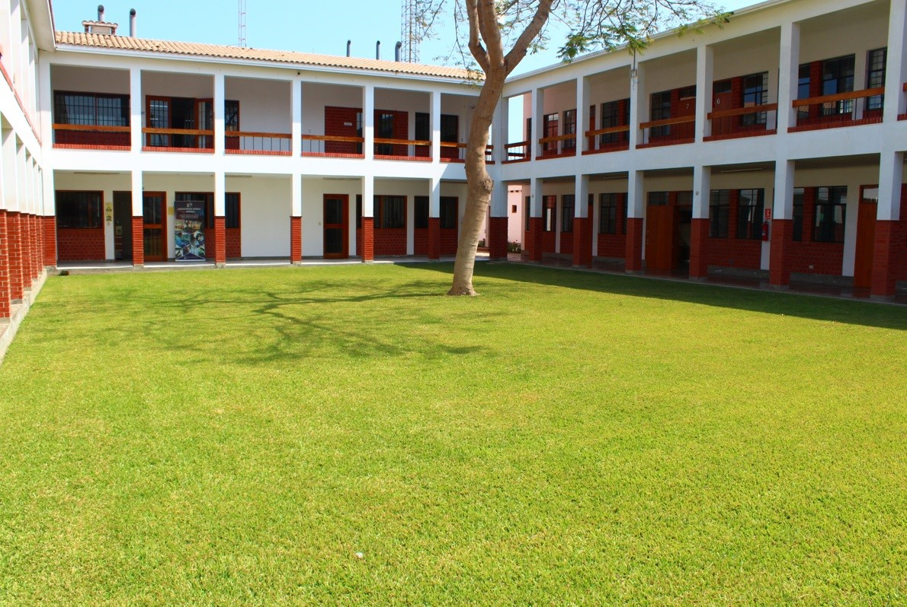

Bienvenidos a Valle Grande

Valle Grande es actualmente un Centro de Educación Superior constituido por la Promotora de Obras Sociales y de Instrucción Popular (PROSIP) el 25 de febrero de 1965, reconocido por el Ministerio de Agricultura mediante Resolución Directoral Nº 04383-AG-DGAG del 2 de junio de 1983 y por el Ministerio de Educación mediante Resolución Ministerial N°0751-92-ED.
Han transcurrido casi 50 años de trabajo y continuamos con el mismo deseo, seguir contribuyendo con el bienestar de las familias de Cañete y Yauyos.Toda esta labor de promoción social y humana se hacía en estrecha colaboración con la Prelatura de Yauyos, la cual se creó el 12 de abril de 1957 y fue encomendada a pedido del Papa Pio XII a sacerdotes del Opus Dei, siendo su primer Prelado Monseñor Ignacio María de Orbegozo y Goicochea, el cual tomó posesión el 2 de octubre de 1957.
Formar personas en el ámbito técnico profesional, considerando el sentido trascendente del hombre, desarrollando en ellos competencias, que faciliten su inserción laboral, contribuyendo de esta manera al desarrollo del país.
VisiónSer una institución referente de excelencia de la educación técnico profesional del Perú, asociada al sector productivo.“Ser al 2030, una institución referente de excelencia de la educación tecnológica del Perú para la formación de personas, que se diferencie por la pertinencia de su preparación profesional, humana y ética, inspirada en valores cristianos.”

Contacto
RUC: 20120099095
Razón Social: I.E.S.T.P. Valle Grande
Ant. Panamericana Sur: Km. 144, San Vicente de Cañete, Lima, Perú.
Apartado Postal 70
(01) 581-2261
www.vallegrande.edu.pe